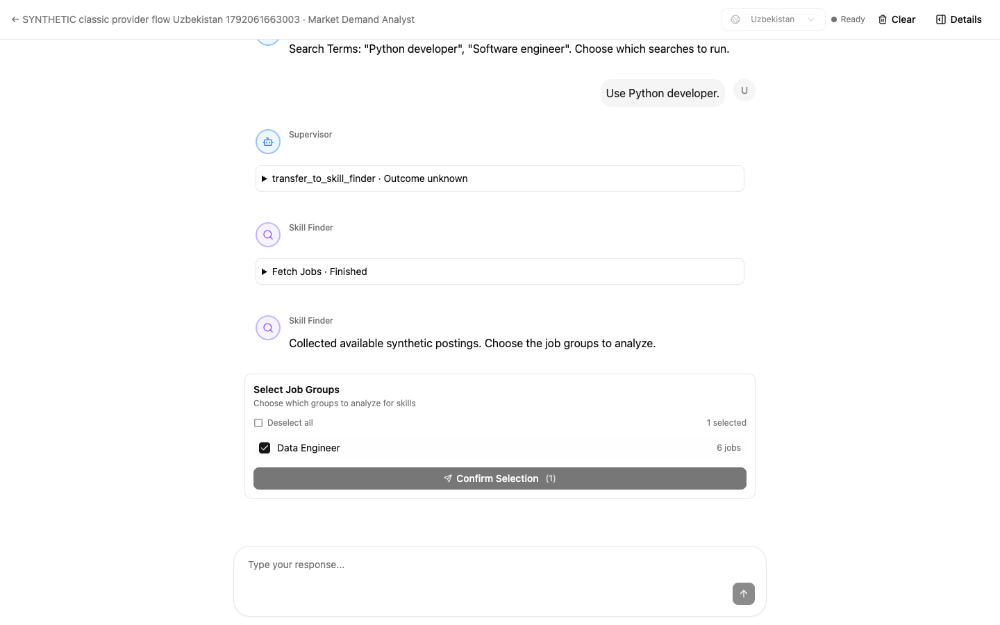
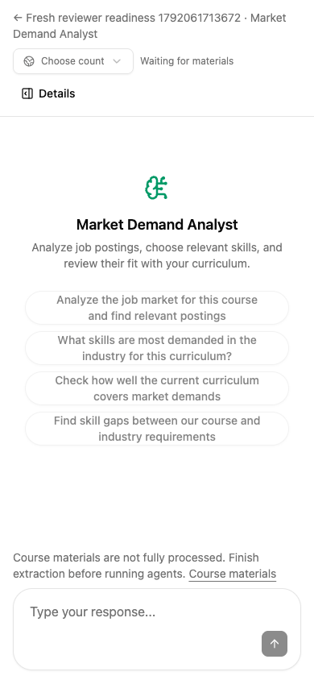

Swarm fixes are live.
One search approval, concurrent job collection, cleaner role groups, and agents that wait until course materials are ready.
Deployed and verifiedWhat changed
Search terms stay in chat.
Approving terms no longer creates a second checkbox confirmation. Job groups and skills keep their existing selection steps.
Available sources run concurrently.
LinkedIn, Indeed and HeadHunter share one search. Unsupported countries are skipped without another teacher decision. LinkedIn’s Uzbekistan location parsing is fixed.
“Middle Data Engineer” joins “Data Engineer.”
Seniority variants and equivalent English/Russian titles share a group. Distinct roles stay separate; every original posting and link is retained.
Agents unlock when processing finishes.
Upload and extraction readiness are checked in the UI and backend. Drafts remain available; polling unlocks the workflow automatically.
Big Data: one existing setup step remains
All 38 files are processed, but the course has no chapters yet. Complete Build Chapters in the course setup before mapping selected skills to the curriculum.
The mapper now stops invalid “unassigned” mappings and explains this prerequisite. Your saved selections, evidence, documents and publication state were unchanged by deployment. Existing search results remain intact; new searches use the corrected providers and grouping.
Live production check
A small “Data Engineer” search in Uzbekistan returned 4 postings from LinkedIn and HeadHunter. Indeed was skipped because it does not support the selected country.
This read-only probe ran on the deployed backend with a small per-source limit. It did not replace your analysis. Availability and latency can vary with providers and query size.
Provider results and release checks
| Source | Status | Recorded outcome |
|---|---|---|
| Indeed | skipped | Country unsupported; skipped automatically |
| success | 2 usable postings | |
| HeadHunter | success | 2 usable postings |
Health check passed. The public frontend bytes match the release image. All 22 changed backend files match the release source. Azure application configuration and identity were preserved.
Checked with real UI and databases
Headless tests exercised the original teacher flow in Uzbekistan and the USA, with controlled external provider/model responses. In each case, two available sources supplied six postings, grouped into one role and one skill with all six original links.




Verification and fresh-agent review
- Final backend regression run: 80 passed; Ruff checks and formatting passed. Includes provider concurrency, real LinkedIn HTML parsing at a controlled HTTP boundary, role grouping, mapping and upload readiness.
- Frontend source suite: 802 passed. The final presentation adjustment passed 32 affected page tests; lint had no errors and production build passed.
- Readiness tests cover empty/processing/failed courses, upload replacement and cancellation, ownership, blocked backend routes, automatic unlock/re-lock, and draft preservation.
- A fresh-context reviewer found a missing normalization guard; it was fixed and tested. Their mobile suggestion-clipping note was also fixed. The reviewer’s four outdated test expectations/fixtures were corrected and pass in the final backend run.
- Independent review found no remaining confirmed high- or medium-priority issue in its scope. Live provider availability and production deployment were verified separately by the coordinator.
The complete backend repository suite is not claimed green. Frontend Node-only boundary tests ran separately from Vitest. Existing lint and bundle-size warnings remain.